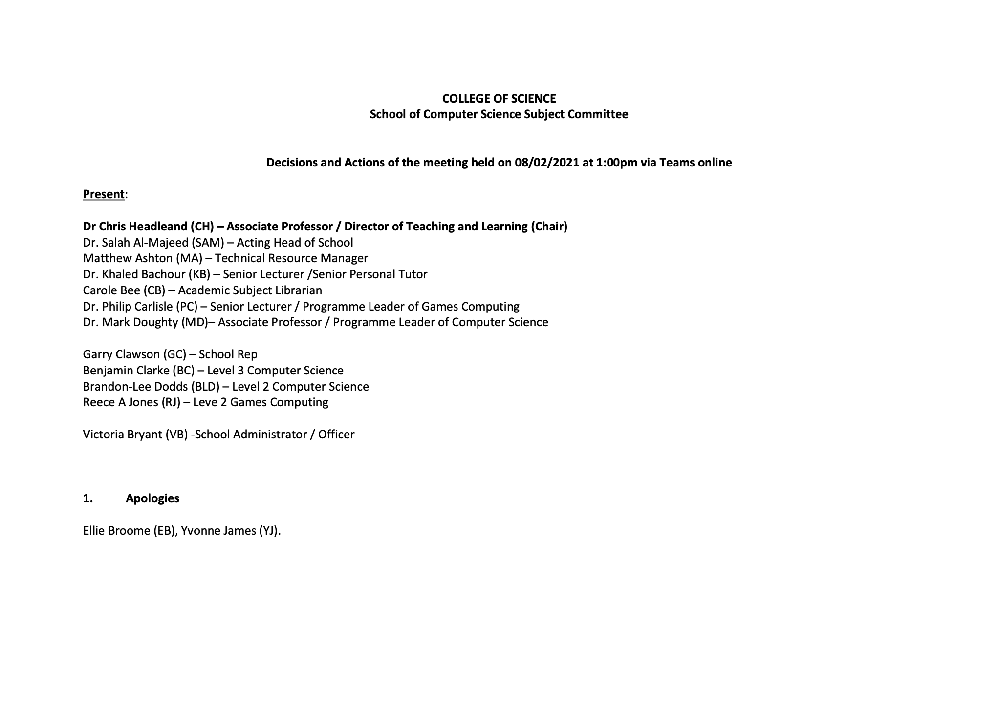
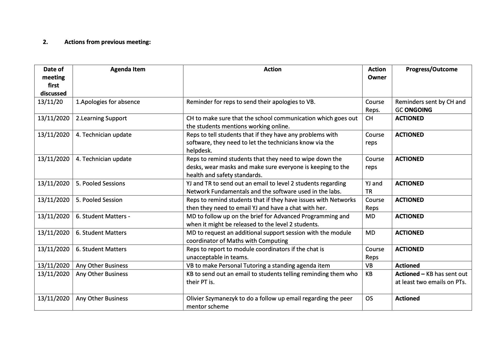
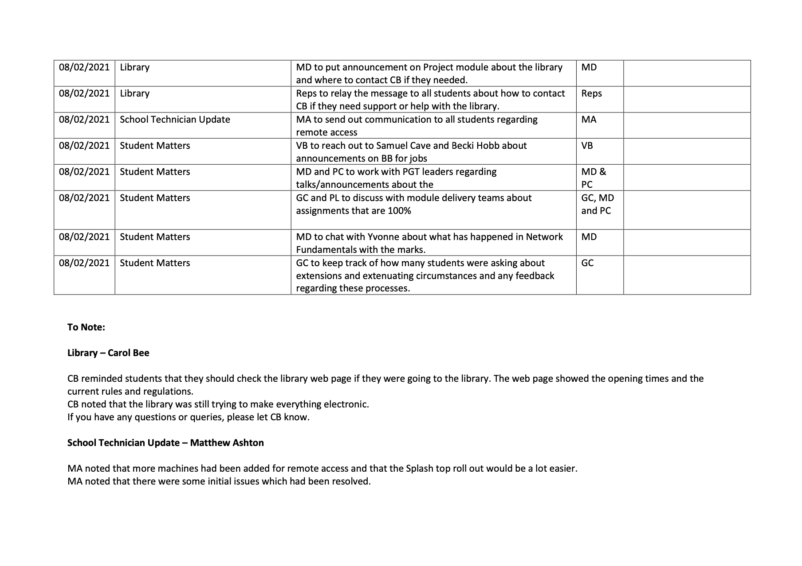

By Garry Clawson
February 8, 2021
A key part of being a School Rep and Course Rep is that you participate in the quarterly Undergraduate Subject Committee Reviews. These reviews are the formal place to air issues and raise concerns that have not seen improvement when reviewed via other channels (such as informal meetings). In general, these meetings don't raise many new items as the focus is on resolving issues before they need review and hopefully capturing issues before they actually become a problem).
These meetings are chaired by the Director of Teaching and Learning Dr Chris Headleand and Garry Clawson, the the SoCS School Rep. The procedures of the meeting are very standard, the previous meeting minutes are agreed and a set agenda is reviewed. This moves through Learning Support, Technician Updates and then Student Matters.
The meeting minutes are not confidential, (all confidential meeting minutes have a confidential tag on the top left hand side in red) and are available to all students. The meeting minutes for the February meeting are posted below for review. Two key talking points were the congestion of exams/assignments that were 100% of the module all together, and also specific module issues on assignments. Both of these were year 2 items (other items can be seen in the minutes below).
These meetings always involve debate and discussion, especially where a process is seen to be not working. As student reps it is our duty to make sure we raise all issues not matter how they may be perceived - so I ask all students to keep raising issues and we as reps will always raise them in these meetings. No concern or idea is too small.



Contact Us
Remember, we are here to help. If you are not having the experience you want then please reach out and let us know. You can contact any one of us through our email links or anonymously using our Feedback page. All emails are received in the strictest of confidence. No concern or idea is too small.